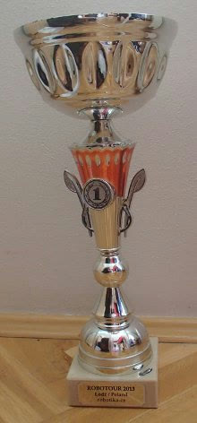

<meta charset="utf-8">
<meta name="viewport" content="width=device-width, initial-scale=1">
<title>ARBot – ARBot zvítězil v Robotour 2013</title>
<link rel="icon" href="../assets/img/arbot-logo.png">
<link rel="preconnect" href="https://fonts.googleapis.com">
<link rel="preconnect" href="https://fonts.gstatic.com" crossorigin>
<link rel="stylesheet" href="https://fonts.googleapis.com/css2?family=Archivo:wght@500;600;700&amp;family=JetBrains+Mono:wght@400;600&amp;family=Newsreader:opsz,wght@6..72,400;6..72,500;6..72,600&amp;display=swap">
<link rel="stylesheet" href="../assets/site.css">

<header class="sitehead">
  <a class="brand" href="../index.html"><span>ARBot</span></a>
  <nav>
      <a href="../index.html">Úvod</a>
      <a href="../pages/prezentace.html">Jak to funguje</a>
      <a href="../pages/umisteni-v-soutezich.html" class="on">Umístění v soutěžích</a>
      <a href="../pages/verze.html">Verze</a>
      <a href="../pages/model-diferencialniho-podvozku.html">Model podvozku</a>
      <a href="../pages/detekce-kraje-vozovky.html">Detekce kraje vozovky</a>
      <a href="../pages/kontakt.html">Kontakt</a>
  </nav>
</header>
<main>
  <div class="pagehead">
    <p class="eyebrow">Robotour &middot; 2013 &middot; 1. místo</p>
    <h1>ARBot zvítězil v Robotour 2013</h1>
  </div>

<section class="first">
  <p>Letošní ročník <a href="https://robotika.cz/competitions/robotour/2013/results/cs">Robotour</a> se konal v polské Lodži pod záštitou tamní university. Roboty se proháněly po památkově chráněném <a href="https://www.openstreetmap.org/#map=17/51.75417/19.44273">parku</a> Jozefa Poniatowkiego. Počasí se vydařilo a tak jedinou nepřijemností byla tragická dopravní situace. Posledních 150 km před Lodží jsme jeli 3.5 hodiny.</p>

  <p>Nulté &ndash; testovací kolo proběhlo velmi dobře až na cíl, kde robot misto aby se otočil zpět ke startu začal kroužit dokola. Že by nějaká chybka? Vlastně dvě. Kroužit by robot neměl. Při zatáčení by měl omezit dopřednou rychlost tak aby právě ke kroužení nedošlo. A za druhé se měl otočit a jet ke startu. Na opravu bylo času dost a tak jsem se do ní pustil. Omezení dopředné rychlosti bylo kvuli testu v minulosti zakomentovano a pro návrat ke startu chyběla jedna podmínka. Zadal jsem cílové souřadnice 1. kola a hurá na start.</p>

  <p>1. kolo &ndash; startovní hvizd, minutový odpočet a ... nic. Robot jen sebou škubnou a zastavil se. V tu chvilku jsem si vzpoměl na předešlý večer jak jsem Martinovi říkal, že do fungujících věcí se nemá šahat. Byl jsem na sebe pěkně naštvanej. Nu co 50 minut by na opravu mohlo stačit, vždyť chybka může být jen na jednom řádku s podmínkou pro návrat na start. A taky přesně dle Murphyho zákonů byla. Ještě to otestovat a hurá do druhého kola. Ale co to!? Robot co chvilku zchromnul na zadní kolečka, která se přestala otáčet. Obdobně mi už jednou tuhly motorové jednotky MD23. Fakt už jsem viděl všechno četně! Čas druhého kola nadešel a tak nebylo už co řešit. Buť to vyjde a nebo ne.</p>

  <p>2. kolo &ndash; robot se rozjel a tak mi spadl kámen ze srdce. Je pravdou, že po několika desítkách metrů v táhlé zatáčce se začal podivně cpát doprava a pak i zabočil do divné cestičky, ale po pár metrech se otočil a vrátil se zpět na správnou cestu. Po několika dalších desítkách metrů zas táhnul doprava. Otočil se do protisměru a cca 10 metrů se vrátil, následovalo otočení do správného směru. Taková zajímavá osmička. Tohle zopakoval ještě jednou, ale naštěstí se stále držel na cestě. Postupně čím dál častěji robot pípáním oznamoval pokles napětí na baterkách. Závěrečnou rovinku již projel bezproblému. V cíli se otočil a vydal se jinou cestou ke startu. Po cca 100 metech už pískal permanentně a téměř se přestal pohybovat. Baterka byla na dně. A tak byl robot zastaven. Super výkon.</p>

  <p>3. kolo &ndash; po krátkém nabíjení se robot opět rozjel. Zvládnul dvakrát správně odbočit a pak se zastavil 150 metrů od cíle na terénní nerovnosti kdy se dostaly dvě kola do vzduchu. I tak byl v kole nejlepší.</p>

  <p>4. kolo &ndash; start z 1. pozice. Počáteční mizerná nálada byla ta tam. Robot perfektně projel úvodní rovinku a po odbočení začal objíždět lavičku bohužel směrem do trávníku.</p>

  <figure>
    <iframe src="https://www.youtube-nocookie.com/embed/Xxb1eJOH4Kc" title="Robotour 2013 – ARBot – start of the fourth round"
      style="width:100%;aspect-ratio:16/9;border:1px solid var(--line);border-radius:3px;background:#000"
      loading="lazy" allowfullscreen></iframe>
    <figcaption><a href="https://www.youtube.com/watch?v=Xxb1eJOH4Kc">Robotour 2013 – ARBot – start of the fourth round</a></figcaption>
  </figure>

  <figure>
    
    <figcaption>Pohár za první místo, Robotour 2013, Lodž.</figcaption>
  </figure>

  <p>Po sečtení výsledků ze všech 4 kol ARBot vystoupal na pomyslnou zlatou bednou.</p>

  <p>Na tomhle místě bych chtěl poděkovat všem organizátorům za úžasné nasazení.</p>

  <p>Dik</p>
</section>

<section>
  <p><a href="umisteni-v-soutezich.html">&larr; Zpět na Umístění v soutěžích</a></p>
  <p class="mono" style="font-size:13px;color:var(--muted)">Text a obrázky jsou převzaté z původního webu na Google Sites; znění článku je beze změn. Odkaz na starší článek o tuhnutí jednotek MD23 vedl na dávno zrušený blog <span class="mono">arbot.cz/post/…</span>, proto tu není.</p>
</section>

<footer>
  <div class="foot-in">
    <span class="mono">ARBOT &middot; AUTONOMNÍ MOBILNÍ ROBOT</span>
    <span>Zdrojový kód, vývojová dokumentace a měření:
      <a href="https://github.com/AlesRuda/ARBot3">github.com/AlesRuda/ARBot3</a></span>
  </div>
</footer>
</main>
